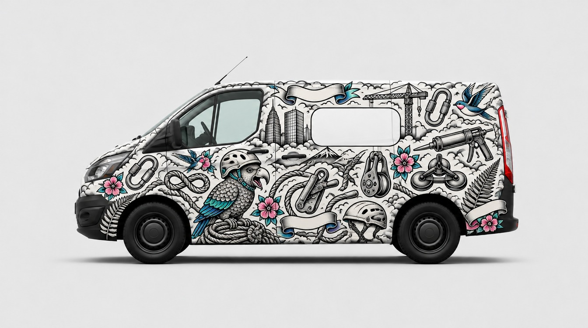
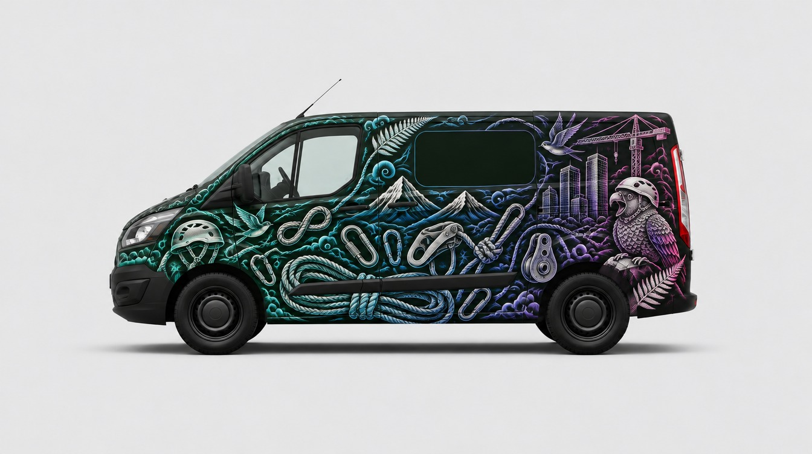
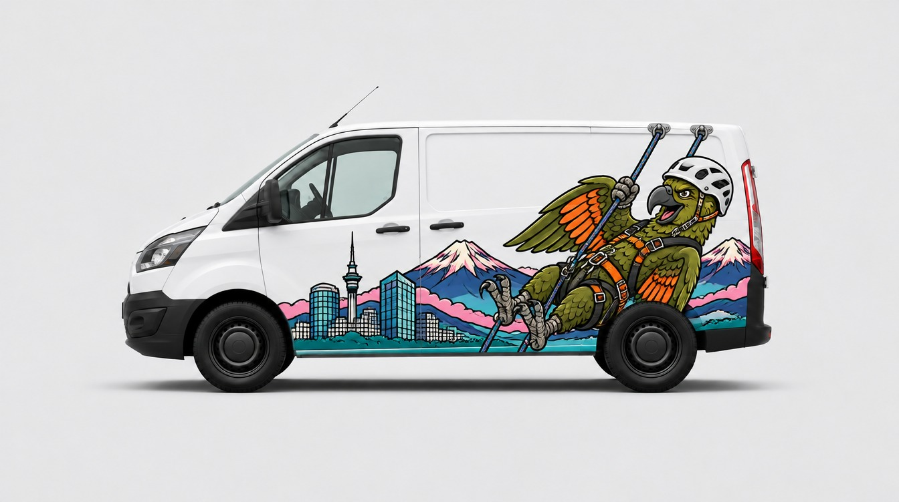
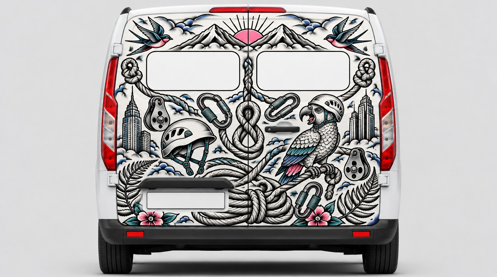
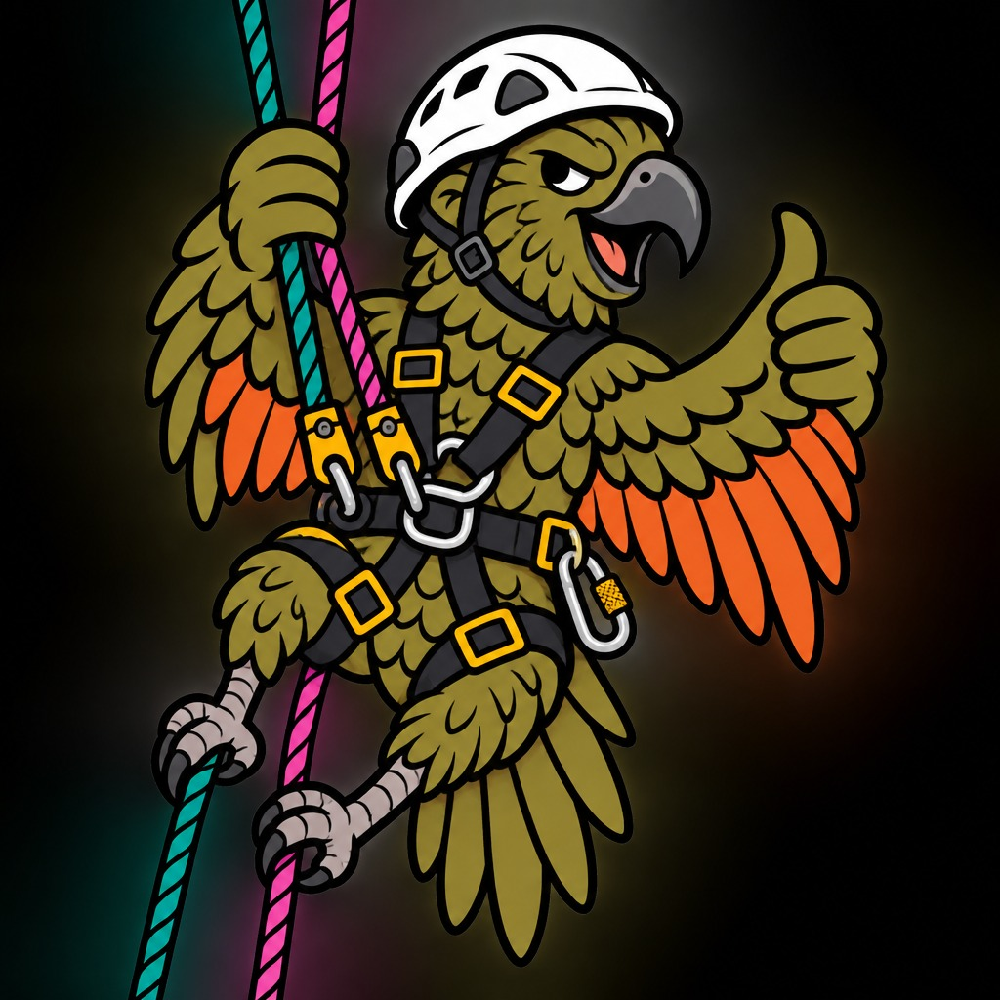
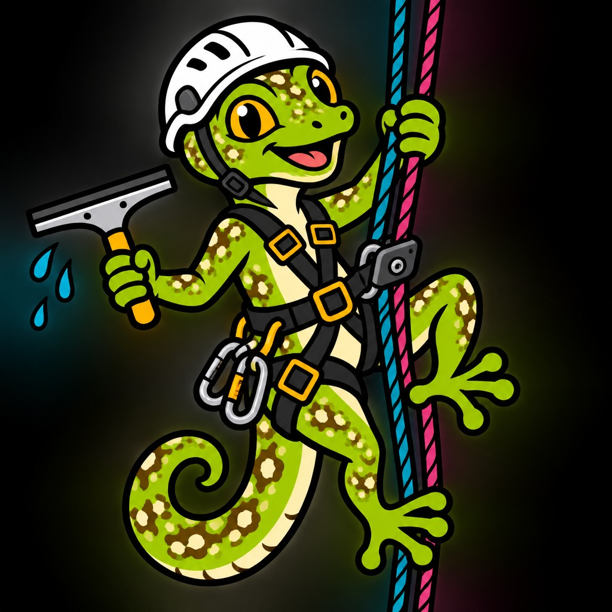
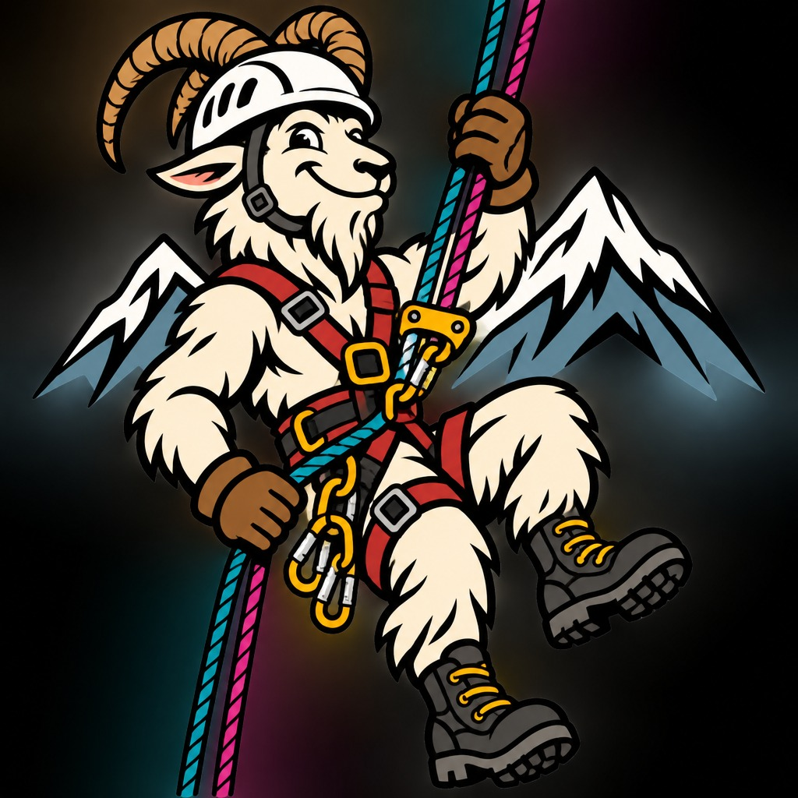

1 · Flash sleeve My pick
Black tattoo-flash linework over the whole white van: knots, carabiners, pulleys, helmets, towers, ferns, and a kea in a helmet. Small Alpenglow touches.

Concept art to choose a direction. The illustrations are computer-made sketches, not final artwork. The logo and phone number on top are your real ones.
Black tattoo-flash linework over the whole white van: knots, carabiners, pulleys, helmets, towers, ferns, and a kea in a helmet. Small Alpenglow touches.

The same idea on a full dark wrap, drawn in pale linework that glows teal to pink along the van. The loudest of the three.

One big picture: the kea mascot abseiling down two ropes over a skyline and the mountains. Less wrap to print, and the cab stays white.

Two clear plates in the artwork: logo on the left door, phone number on the right.


New Zealand's mountain parrot. Cheeky, clever, lives up high, and it suits the mountain in your logo.

A jewelled gecko. Born to climb walls and glass. Friendlier and more cartoon.

Tough and sure-footed. More of a "hard worker" feel.